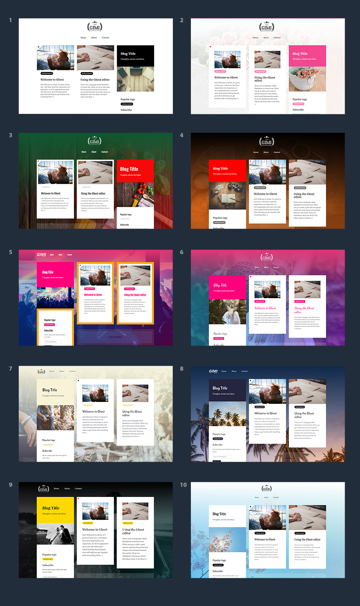
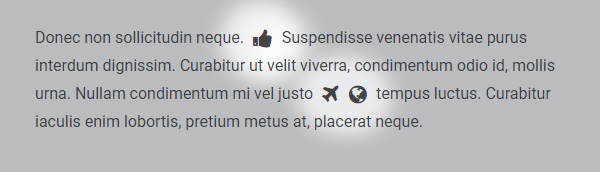
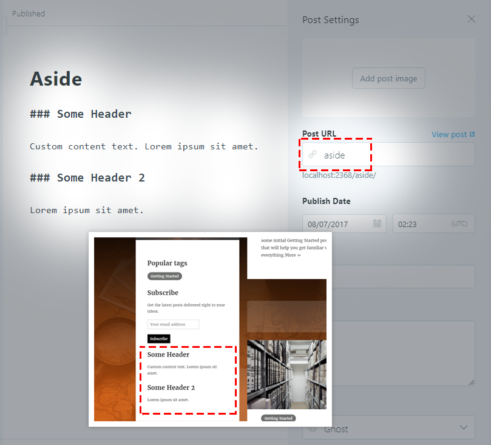

GIMI Theme Documentation
Theme version: 3.0.0 Supported Ghost version: v1.X.X Updated: 13 August 2017List of content
Structure of included files in the package
gimi-theme folder
Contains theme main files
demo-child-themes folder
Contains child themes
documentation folder
Contains documentation
Theme installation
To install this theme you must have a working version of Ghost 1.X.X already installed. For information on installing the Ghost platform, please see the Ghost v1.0.0 documentation.
First of all, you must create a .zip archive that contains theme files. Modify theme options if you need to (see details below), then select all files in gimi-theme folder and create .zip archive.
- In your Ghost admin panel navigate to Design tab
- Click UPLOAD A THEME button and upload created .zip file
- Once the file has uploaded, click ACTIVATE NOW

- Go to Code Injection tab
- Paste a child theme configuration
- Click SAVE
- Go to Labs tab
- Enable Public API feature and optionally Subscribers

- That's it! If something is still not clear, have a look on the installation process video: https://www.youtube.com/watch?v=9JIyN5OI3no
What is a child theme?
We have separated some code from the core theme structure to make GIMI customizations easy and simple - we call it a "child theme". Child theme contains some configuration details about colors, fonts and style. GIMI requires that data to render your website correctly, so please don't forget to include it!
How to activate a child theme?
You can inject a child theme code into your blog header by using admin panel (see theme installation). Alternatively, if you want to keep admin panel "clean", you can edit partials/child-themes/theme.hbs file.
How to get a child theme code?
We have included 10 child themes in your package. You can find them in demo-child-themes folder.
A child theme code is located in theme.hbs file.
You can use online editor http://gimi-editor.themesghost.com to generate your own child theme.
How to download a child theme code from the editor?
Click on Get CSS button and copy the code.

How to use Disqus comments?
Fill in your Disqus id in post.hbs file to activate disqus powered comments.

Post options
You can change some post functionality in post.hbs file.
Option
Acceptable value
showAuthor
boolean: true, false
showDate
boolean: true, false
showSocialMediaShareIcons
boolean: true, false
disqus
boolean: false or string: Disqus id
Theme options
You can change some blog functionality in default.hbs file.
Option
Acceptable value
showPopularTags
boolean: true, false
showRecentPosts
boolean: true, false
Blog logo
We strongly recommend to use SVG file format for your logo.
Font Awesome icons
GIMI theme comes with Font Awesome 4.7.0 icons collection. Use the following code to include icon in your content:
<i class="fa fa-thumbs-up fa-lg" aria-hidden="true"></i>
fa-thumbs-up is the icon name. You can find the list of available icons on http://fontawesome.io/icons/
Please note, icons are custom elements defined by styles, so they are not visible in Ghost preview editor.
Social media icons
Twitter and Facebook icons are automatically enabled, if you fill in social profiles in Ghost admin panel (Settings -> General).

To add or remove any other icons (Font Awesome) edit partials/social.hbs file.

Loop placeholder
You can paste custom HTML/CSS into /partials/loopPlaceholder.hbs file which will be displayed after first two posts. By default loop placeholder is not active and you have to change showLoopPlaceholder option to true in index.hbs.

How to create a wide page?
Create internal tag #wide and add it to a page.

How to add a custom content to aside?
Create static page with slug "aside". Its content will be loaded to aside.
Support
If you have any questions that are beyond the scope of this documentation, please do not hesitate to contact us at themesghostcom@gmail.com.
3rd party assets
Fonts
Scripts
Photos
Photos used in theme previews and the editor are licensed under Creative Commons Zero.
Thank you to all authors for that beautiful piece of work.
Sophie Higginbottom Leeroyagency Alvaro Serrano Kevin Young Luca Bravo Matthew Henry Tim trad Vinh Pham Alberto Restifo Alex Jodoin Brooke Cagle Dustin Lee Steven Kamenar Roman Kraft Artem Kovalev Ben White Hisu Lee Dariusz Sankowski Anders Jilden Thomas Lefebvre Matty Adame Daria Yakovleva Brooke Lark
Vectors are created by Freepik
Photos and vectors are not included in the theme package.
Changelog
3.0.0 - 13 August 2017
- Stop developing version for Ghost v0.11.X.
- Remove recent posts from homepage because it's the same as the posts loop there
- Editor: add options: aside position (left/right), top gradient size, top line (on/off)
- Editor: add possibility to use a custom cover IMG URL
- Update default blog layout to 3 columns
- Add #wide page
- Add loop placeholder
- Implement loading content to aside from static page
- Change structure of files
2.0.0 - 2 August 2017
- Release Ghost v1.X.X version.
1.0.0 - 23 May 2017
- Theme release